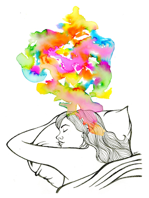

Learning is one of the most rewarding things you can undertake. Whether it’s formal study or a self motivated pursuit there is no better time than right now to start your journey. However getting started and staying motivated can be tricky. Here are some tips derived from both personal experience and research to help you reach your learning goals.
The importance of an effective daily routine cannot be understated. Every day of your life can be viewed as a series of decisions. From the moment you wake up to moment you fall asleep you consciously and unconsciously make hundreds of decisions.
A good daily routine frees you from the cognitive burden of having to make daily decisions about the routine small stuff, such as what time to get up, when to do the laundry and what to have dinner, giving yourself more brain space to focus on the more important things you want to achieve on any given day.
The much lorded Apple Inc co-founder Steve Jobs famously took this notion to the extreme by wearing what was essentially the same outfit for most of his working life, therefore freeing himself from the daily mental grind of deciding what to wear.
Routines are highly personal as they need to encapsulate your personality, lifestyle and commitments. The important thing is that it works for you and is comfortable. If your routine isn’t comfortable you’ll have a hard time sticking to it and will just end up miserable.
A routine isn’t created overnight. It takes time to figure out what works for you and what doesn’t. Start with just one thing and slowly build up from there. Over time start to add more things to your routine, interleaving all the things you want and need to do. It’s also important to realise that your routine will be forever evolving, don’t be afraid to switch it up and experiment.
The benefits to health and wellbeing of a good nights sleep, as well as the dangers of too little or poor quality sleep have been known since ancient times. It should therefore come as no surprise that a good nights sleep is also a crucial element of the learning process.
There is a time for many words, and there is also a time for sleep. - Homer
While you’re not consciously aware of it your brain is very active while you’re sleeping, it is busy clearing out toxins accumulated during the day and committing new material you’ve been learning while awake to memory (Oakley, 2014).
Sources vary but as an adult you should be aiming for between 7-9 hours of good quality sleep per night (Sleepfoundation.org, 2019). Aim to go to sleep and wake up at roughly the same time everyday. As well as setting your body clock, which makes falling asleep and getting out of bed in the morning a lot easier, going to sleep and waking up at the same time everyday makes sticking to your daily routine that much easier. Finally focus your bedroom on sleep. Don’t work in your bedroom. This helps create a mental divide between work and sleep.
At some point everyone has struggled with procrastination. That seemingly irresistible basic instinct to divert your attention to anything other than the task your more logical self would like to focus on can be hard to ignore. While it may not be possible to beat procrastination entirely you can certainly loosen its grip.
At the root of procrastination lies feelings of discomfort. When you think about getting started on that task you’ve been putting off, a wave of discomfort begins to wash over you. At this point your brain attempts to shift your attention onto thoughts or tasks that you are more comfortable with in an attempt to lessen your discomfort.
The important thing to recognise here is that it is almost always the thought of starting a task rather than actually doing a task that produces feelings of discomfort. If you can just get started on a task your feelings of discomfort will diminish and your chances of making good progress will be greatly increased.
This thinking has been formalised by Francesco Cirillo into what is known as the Pomodoro Technique. The technique is very simple. First get yourself a timer, you can use your mobile phone as the timer but be careful it doesn’t distract you. Set the timer for 25 minutes and dive right into that task you’ve been putting off. Focus solely on the task at hand without distraction. When the timer goes off after 25 minutes stop what you are doing, take a break and give yourself a small reward. Do not skip the reward, it’s an important part of the process (Francescocirillo.com, 2019).
By limiting periods of focus to just 25 minutes and adding the promise of a guilt free reward we can lower the discomfort associated with beginning a task and therefore weaken the power procrastination holds over us.
Seymour Cray was a legendary engineer best known for founding Cray Research in 1972. For decades Cray designed and built the worlds fastest supercomputers. One of the most interesting things about Cray was his hobby of tunnel digging. For years Cray worked on digging a large tunnel underneath his home in Wisconsin. It was here in this tunnel, with a little help from elves, that Cray found solutions to many of his most difficult challenges (Cs.man.ac.uk, 2019).
“While I'm digging in the tunnel, the elves will often come to me with solutions to my problem.” - Seymour Cray
So what was going on here? Did Cray really receive visits from elves that imparted some engineering wisdom to him in his tunnel? Not likely. What Cray was actually referring to when he talked of elves was diffuse thinking.
Modern neuroscience theory tells us our brains use two different modes of thinking. The focused mode and the diffuse mode. The focused mode is activated when you consciously turn your attention to something. Diffuse mode thinking is more subtle. It’s the thinking your brain seems to do all by itself. Diffuse mode thinking happens when you turn your focus away from something, it’s that eureka moment you get without even being consciously aware you’ve been thinking at all.
Both focused and diffuse modes of thinking are vital for learning and it’s important to switch between both modes regularly. Focused mode receives new information and then passes it through the diffuse thinking mode for further processing. It’s this back and forth between conscious and unconscious thinking that creates solidified understanding (Oakley, 2014).
Entering a diffuse mode of thinking is easy. Just stop focusing on the task at hand! Some great ways of truly letting your focus wander and entering the diffuse thinking mode are:
Hopefully this little text has given you some ideas and inspiration to begin your own learning journey. Perhaps the best piece of advice to end with is to not worry if you don’t stick to your routine every day, stay up late or sleep in sometimes and procrastinate your way through a study session. It’s the big picture that counts.
So experiment, have fun and be kind to yourself.
Oakley, B. (2014). A Mind for Numbers.
Sleepfoundation.org. (2019). How Much Sleep Do We Really Need? | National Sleep Foundation. [online] Available at: https://www.sleepfoundation.org/excessive-sleepiness/support/how-much-sleep-do-we-really-need [Accessed 25 Aug. 2019].
Francescocirillo.com. (2019). The Pomodoro Technique® - proudly developed by Francesco Cirillo | Cirillo Consulting GmbH. [online] Available at: https://francescocirillo.com/pages/pomodoro-technique [Accessed 25 Aug. 2019].
Cs.man.ac.uk. (2019). Seymour Cray -- An Appreciation. [online] Available at: http://www.cs.man.ac.uk/~toby/writing/PCW/cray.htm [Accessed 25 Aug. 2019].